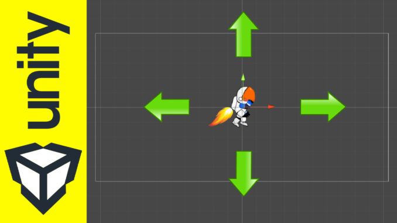

C'est le projet le plus important de ma carrière, nommé projet de l'année par le département informatique du collège. Ce travail est complet, utilisant les éléments du frontend, puis Java et MySQL en backend. Il est développé avec une architecture MVC et réalisé grâce à Spring Boot.


Ce projet a été créé grâce à Android Studio, en utilisant l'architecture MVP et en étant codé en Kotlin avec SQLite comme base de données.

site web e-commerce pour vente des equipements sportifs. Ce site utilise HTML, CSS, bootstrap et javaScript.

Ce jeu vidéo 2D est inspiré du fameux jeu 2D Mario. Il est codé en C# et créé grâce à Unity.

Ce jeu 3D est la suite du jeu en 2D. Il est également codé en C# et créé par Unity. Il contient des designs originaux ainsi que de nombreuses caractéristiques propres à un jeu 3D, comme des caméras et des lumières variées, et des ennemis programmés avec de l'intelligence artificielle.